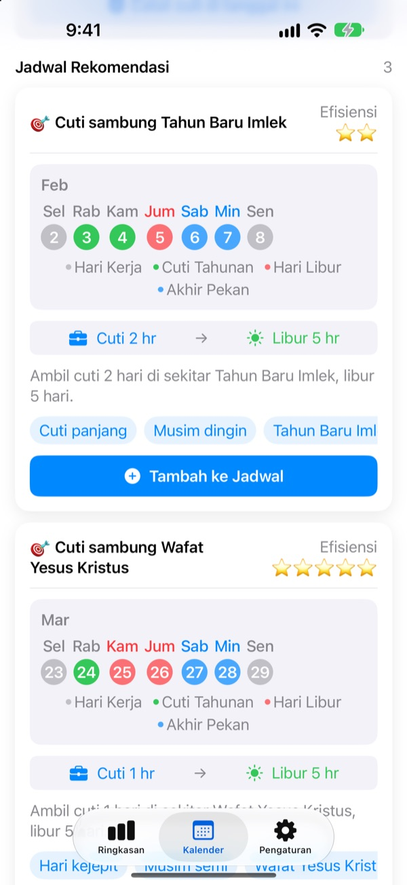
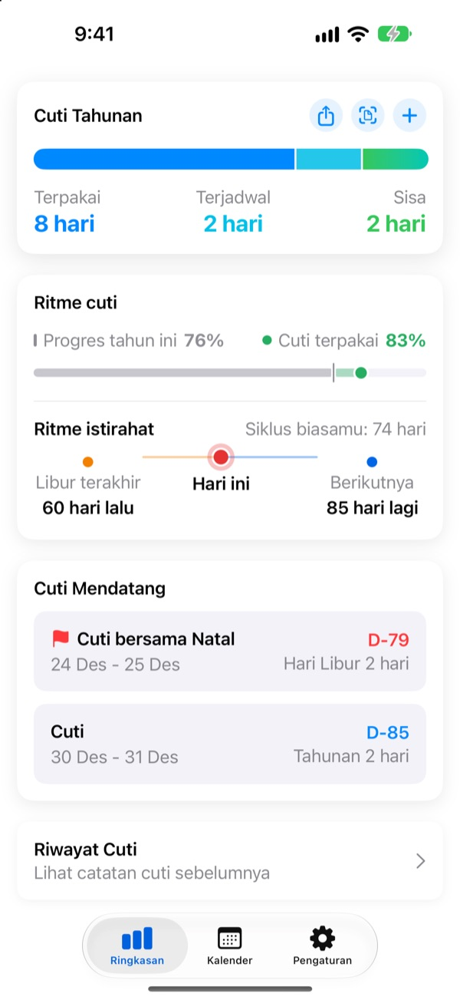
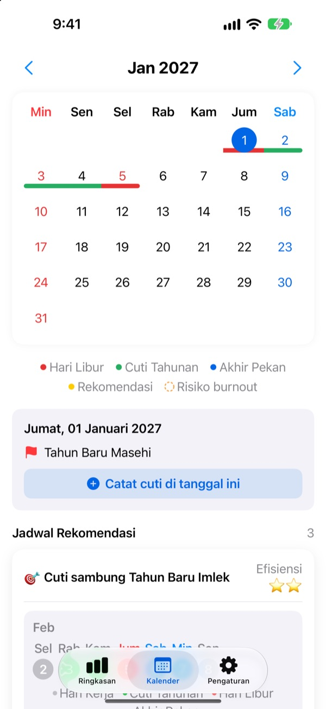
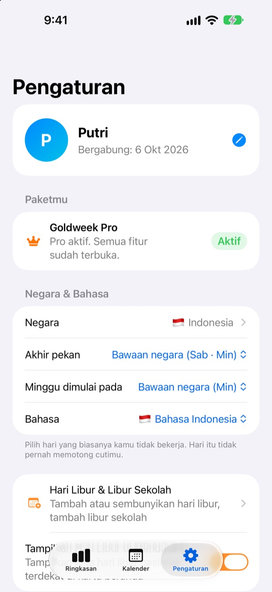

Cuti sedikit,
libur panjang
Goldweek memadukan hari libur nasional dan akhir pekan, lalu menunjukkan tepatnya hari apa kamu perlu cuti agar liburnya paling panjang. Tidak perlu lagi membolak-balik kalender sambil menghitung.
Unduh gratis. Mencatat cuti dan melihat rekomendasi tetap gratis.

Cutimu cukup untuk libur berapa hari?
Pilih berapa hari cuti yang bisa kamu ambil. Kami tunjukkan libur terpanjang yang bisa kamu dapat di sekitar hari libur berikutnya.
Capek menghitung hari di kalender?
Kamis tanggal merah, ambil cuti Jumat? Atau simpan untuk disambung dengan libur panjang bulan depan? Setelah bolak-balik kalender, akhirnya cuti diambil asal saja, dan di akhir tahun sisa cuti hangus begitu saja. Goldweek yang menghitung, lalu menunjukkan hari-hari yang membuat cutimu paling awet.
Sisa cuti terlihat sekilas
Total, terpakai, dan sisa cuti ada di satu layar. Di sebelahnya terlihat berapa bagian tahun yang sudah lewat dan berapa cuti yang sudah dipakai, jadi kamu langsung tahu kalau terlalu banyak menabung cuti.
Sisa cuti dan libur berikutnya juga tampil di widget layar utama.

Catat cuti langsung di kalender
Hari libur, cuti, dan rekomendasi libur tampil di kalender dengan warnanya masing-masing. Ketuk tanggal untuk menambah atau mengubah cuti, termasuk setengah hari, seperempat hari, atau per jam.
Kamu juga bisa memasukkan riwayat cuti sekaligus dari foto layar HR kantormu.

Negaramu, jam kerjamu
Hari libur 42 negara, dari Indonesia dan Asia sampai Eropa dan Amerika. Untuk negara yang liburnya beda per wilayah, pilih wilayahmu. Negaramu tidak ada? Tambahkan hari liburnya sendiri.
Kamu juga bisa memilih hari akhir pekan, hari pertama dalam seminggu, serta jam kerja tetap, paruh waktu, atau sif.

Mulai dalam tiga langkah
- 1
Pilih tempat kerjamu
Saat pertama dibuka, pilih negara dan jumlah cuti tahunanmu.
- 2
Pilih rekomendasi
Di tab Kalender ada rekomendasi libur. Tambahkan yang kamu suka ke jadwal.
- 3
Catat cutimu
Ketuk tanggal atau masukkan riwayat cuti dari foto.
Cara menghitungnya
- Sehari penuh
- Mengurangi 1 hari
- Setengah hari
- 0,5 hari
- Seperempat hari
- 0,25 hari
- Per jam
- Sesuai jam kerjamu hari itu
- Sakit, izin resmi, dinas
- Tidak mengurangi sisa cuti
- Cuti Bonus
- Cuti tambahan seperti cuti pengganti, dicatat terpisah dengan tanggal kedaluwarsa (Pro)
Jumlah cuti tahunan dan bulan awal tahun cutimu bisa diubah kapan saja di Pengaturan.
Istirahat cukup itu gratis. Serahkan perencanaan ke Plus dan Pro.
Gratis
- Cuti sehari, setengah, seperempat, dan per jam, beserta sisa cuti
- Hari libur 42 negara, libur sendiri dan libur sekolah
- Lihat semua rekomendasi tahun ini, tambahkan sampai 3
- Pengingat jeda istirahat, notifikasi, dan widget
- Tambah cuti dari foto
- Backup iCloud dan jadwal bersama keluarga
Plus dan Pro
- Plus: Perencana cuti optimal
- Plus: Rekomendasi tanpa batas, termasuk tahun lalu dan tahun depan
- Plus: Kirim cuti ke aplikasi Kalender
- Pro: Semua fitur Plus, Cuti Bonus, batas tahunan dan carry over per jenis
- Pro: Impor kalender sekolah dan deteksi kalender otomatis
- Pro: Libur bersama keluarga dan hari spesial keluarga
Setiap paket tersedia sebagai langganan tahunan atau sekali beli seumur hidup.
Langganan tahunan diperpanjang otomatis kecuali dimatikan paling lambat 24 jam sebelum periode berakhir. Atur kapan saja di Pengaturan > Akun Apple > Langganan.
Pertanyaan umum
Sisa cutiku sepertinya tidak tepat.
Cek di Pengaturan bulan awal tahun cuti dan total cuti tahunanmu. Setengah hari (0,5) dan seperempat hari (0,25) dipotong otomatis, sedangkan jenis yang tidak mengurangi cuti, seperti sakit, izin resmi, atau dinas, tidak mengubah sisa cuti. Kalau masih tidak cocok, kirim email ke kami.
Cutiku tidak muncul di kalender.
Cuti yang dibatalkan tidak tampil di kalender. Cek status catatannya di Kelola cuti. Memperbarui ke versi terbaru juga bisa membantu.
Bagaimana cara menambah Cuti Bonus?
Ketuk + di tab Ringkasan untuk membuka Kelola cuti, lalu gunakan bagian Cuti Bonus di bawah. Pilih jenisnya (cuti pengganti, cuti penghargaan, cuti penyegaran, dan lainnya), isi jumlah hari dan, kalau mau, tanggal kedaluwarsa. Cuti Bonus dicatat terpisah dari cuti tahunan biasa.
Sudah bayar, tapi fiturnya belum terbuka.
Ketuk Pulihkan pembelian di bagian bawah tab Pengaturan. Pembelian dipulihkan dengan Akun Apple yang dipakai masuk ke App Store. Kalau masih belum bisa, kirim email ke kami.
Apakah data hilang kalau aplikasinya dihapus?
Data tersimpan di perangkat, jadi menghapus aplikasi akan menghapus semuanya. Nyalakan Backup iCloud supaya ada salinan yang bisa dipulihkan nanti.
Bisa menambah hari libur sendiri atau menyembunyikannya?
Bisa. Di Hari Libur & Libur Sekolah pada Pengaturan, kamu bisa menambah hari libur sendiri atau menyembunyikan hari libur bawaan.
Negara mana saja yang didukung?
Goldweek punya hari libur 42 negara. Pilih negaramu di Pengaturan (dan wilayahnya, kalau liburnya berbeda per wilayah), lalu kalender langsung menyesuaikan. Kalau negaramu belum ada, tambahkan hari liburnya sendiri atau minta lewat masukan di aplikasi. Untuk Indonesia, cuti bersama mengikuti SKB yang terbit setiap tahun.
Di mana dataku disimpan?
Semua yang kamu masukkan hanya ada di perangkat atau iCloud milikmu sendiri. Kami hanya menerima statistik penggunaan anonim, laporan kerusakan anonim, dan masukan yang kamu kirim sendiri.
Untuk hal yang belum terjawab di atas, ide fitur, atau laporan bug, kirim ke leeo@kakao.com. Biasanya kami membalas dalam satu atau dua hari kerja.